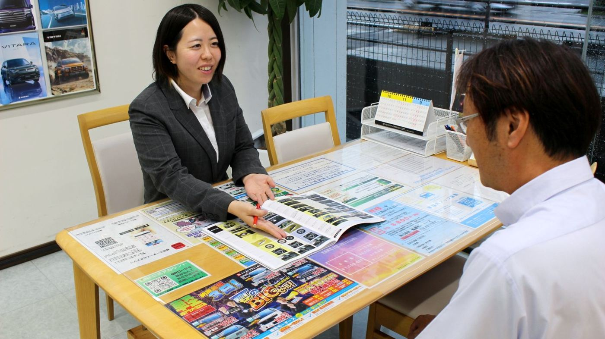
01
営業
新車・未使用車・中古車を見に来たお客様にご希望を聞き、車選びの相談から商談、納車まで担当します。
個人ノルマなし会社の目標はありますが、個人のノルマはなく、相談に集中できます。
昭和32年、榛原町で始まり、
牧之原で車を売り、直してきました。
車の仕事は、車好きだけの世界に見えます。
でもこの地域で車は贅沢品ではなく毎日の足。
朝の通勤から夕方の買い出しまで、
販売、車検、整備でその足を守っています。一人ひとりの毎日が、いつも通り動くように。
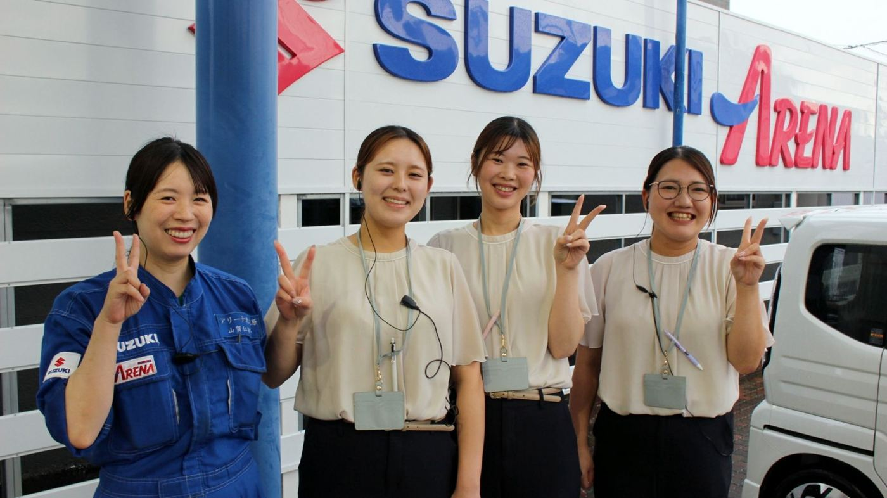
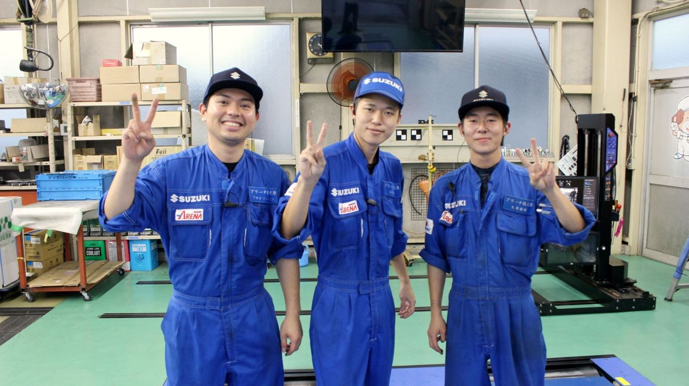
OUR STORY
地域の暮らしを支えながら、自分自身も成長できる場所
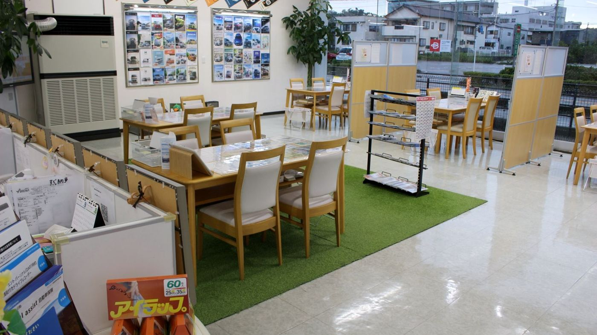
私たちは、朝の通勤、子どもの送り迎え、仕事での移動、夕方の買い出しまで、車が生活に欠かせない志太榛原地域で、一人ひとりの毎日の移動を支えています。大切にしているのは、人の役に立つことです。安心して便利に使っていただき、ちょっとした良い驚きも届けながら、お客さまと長く続く関係をつくっていきたいと思っています。地域のインフラのように必要とされ、年齢を重ねても安心して働き続けられる会社にしていきたい。人の役に立ちたい、周りを幸せにしたいと思える方と、一緒に働けたらうれしいです。
取締役柴田 太郎
毎日の足を支える会社として、販売から整備、保険まで自社で向き合っています。
昭和32年、榛原町でオートバイの販売・修理工場として創業。今はスズキ正規ディーラーとして、新車・未使用車・中古車の販売から車検、点検、整備、鈑金塗装、保険まで自社で対応しています。
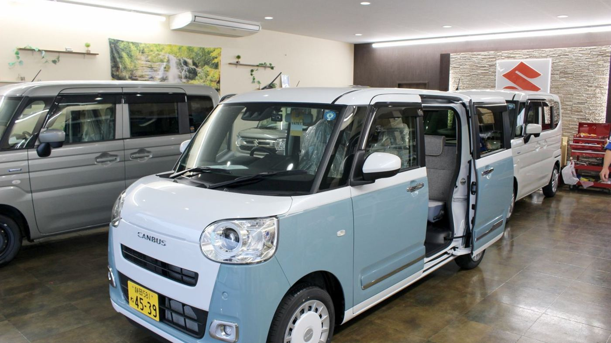
※年商は2023年、社員数は代表含む35名、年代別は代表除く34名（2025年8月時点）、賞与は前年度実績です。
20代から70代まで、幅広い年代の社員が同じ職場で働いています。
営業・整備・フロント事務が連携し、一台一台を通じて地域の毎日の足を支える仕事です。

01
新車・未使用車・中古車を見に来たお客様にご希望を聞き、車選びの相談から商談、納車まで担当します。
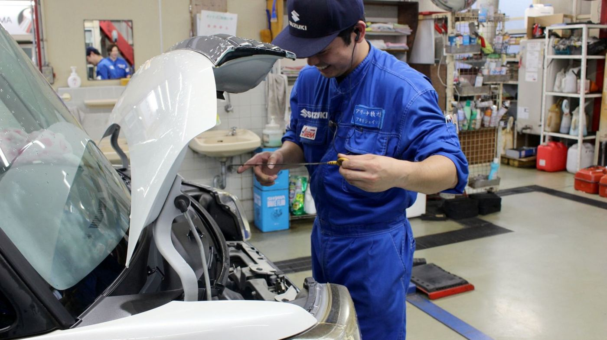
02
車検、点検、オイル交換、新車の納車整備、タイヤ交換などを担当します。毎日の予約はアプリで管理します。
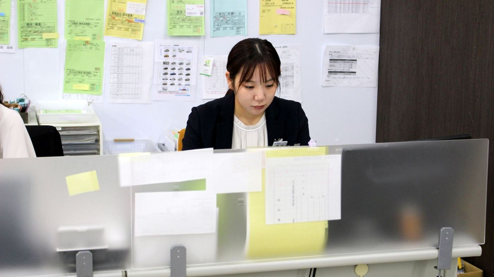
03
来店受付、電話対応、書類作成、データ入力、見積書や契約書の作成サポート、保険のご案内を担当します。
車の知識よりも、人の役に立ちたい気持ちを大切にし、研修と資格取得を支えます。
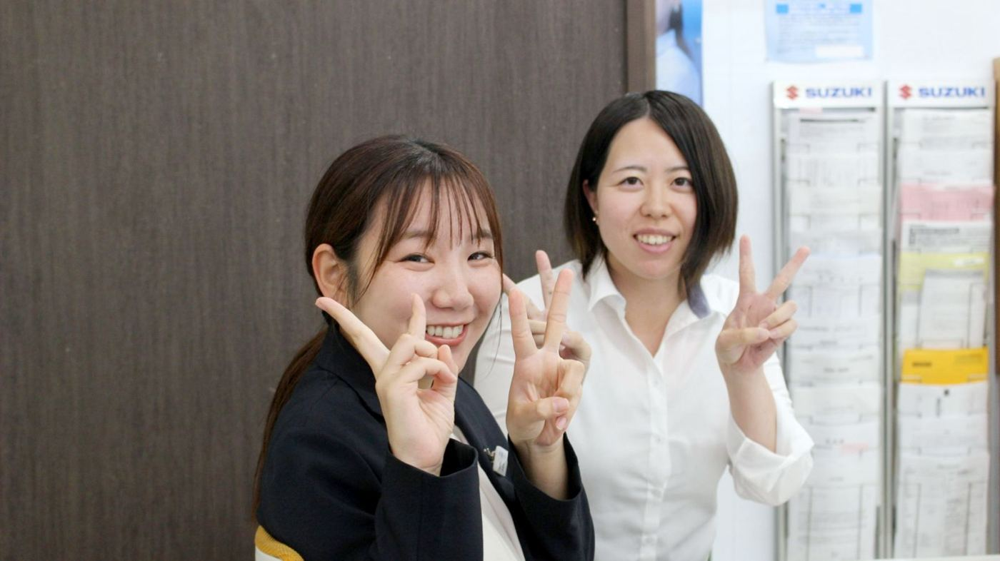
事務・営業・整備向けのスズキ研修があり、東京海上の実務研修も受けられます。未経験から整備士3級・2級を取得した社員もおり、資格取得費用は会社が全額負担します。
社員の前職
定年を気にせず通える会社を目指し、休みや待遇、家族への制度も整えています。
01
残業ほぼなし、火・水休みと連休で、仕事と生活のリズムを整えやすい環境です。
勤務時間は8:45〜18:00です。休憩は75分で、残業はほぼありません。
定休日は毎週火曜・水曜です。週休2日制で、休みは会社カレンダーによります。
年末年始・GW・夏季に、それぞれ7日間の連休があります。
02
資格費用は会社が全額負担し、スズキや東京海上の研修で仕事を覚えていけます。
資格取得の費用は、会社が全額負担します。
事務・営業・整備向けのスズキ研修と、東京海上の実務研修があります。
制服、つなぎ、整備工具、シューズを会社が支給します。
03
退職金や家族の車の割引もあり、地域で腰を据えて働く人を支えています。
前年度実績は3.0ヶ月分。時間外手当もあります。
勤続5年以上で退職金があります。地元で長く働きたい方にも向いています。
車通勤OK。無料駐車場があり、交通費は月1万円まで支給されます。
社員と家族は、車の購入や車検・点検などの整備で割引を受けられます。
前職も入社理由もさまざまな人が、地域のお客様と関わりながら働いています。
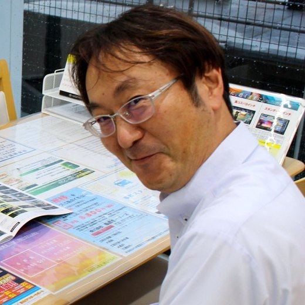
JA21年から店長へ
店長
前職：JAに21年勤務
未経験から3級・2級整備士取得
フロント
前職：自動車メーカーに10年勤務
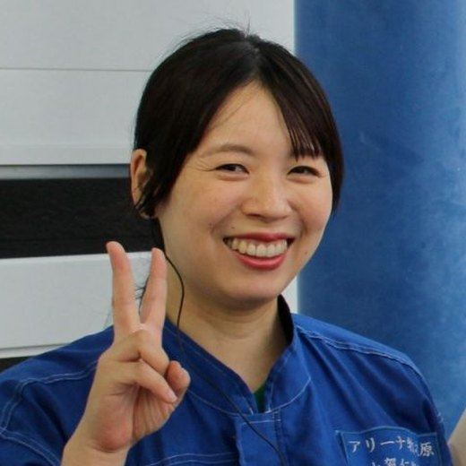
事務入社から整備へ
整備士
前職：ドア枠工場と中古車雑誌の営業
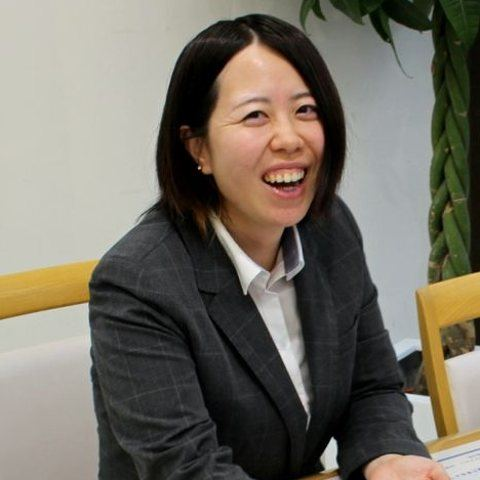
買い替えまで頼られる
営業
前職：信販会社の営業を3年半
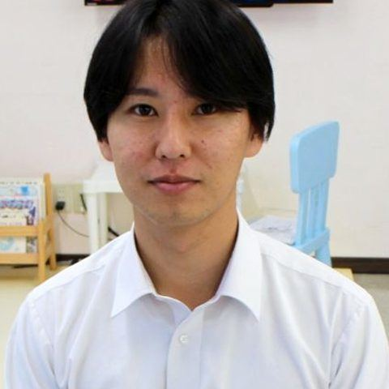
新卒から自分のペースで
営業
前職：新卒で入社
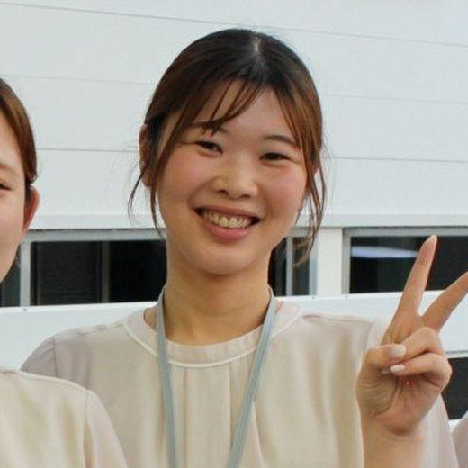
工場事務から車の事務へ
事務
前職：化粧品工場の総務事務
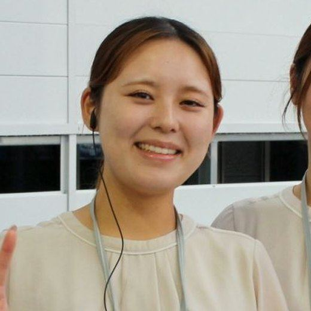
家の近くで未経験からスタート
事務
前職：給食センター
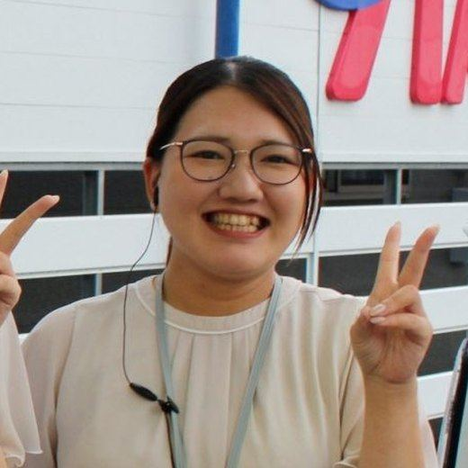
地元で長く働く選択
事務
前職：倉庫の検品作業
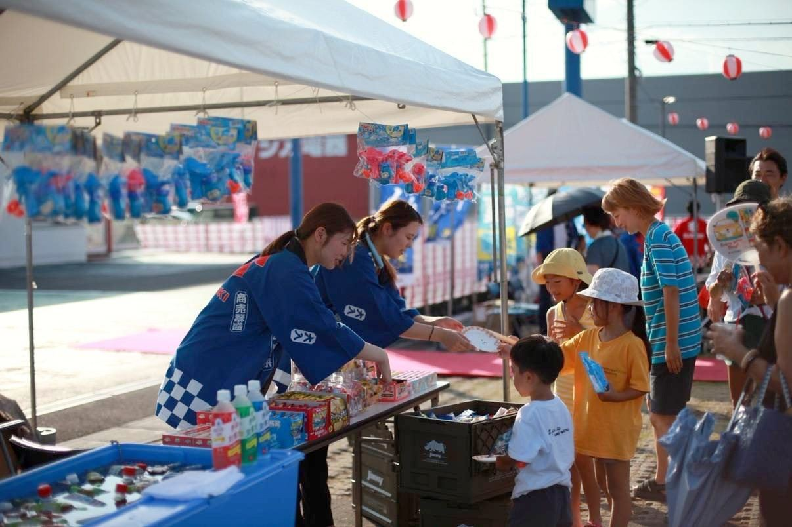
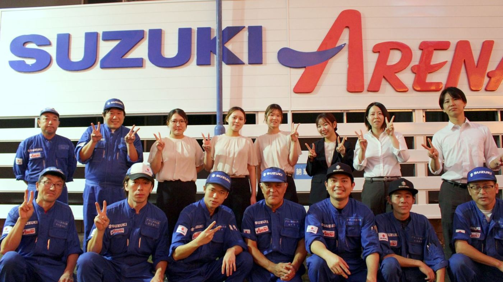
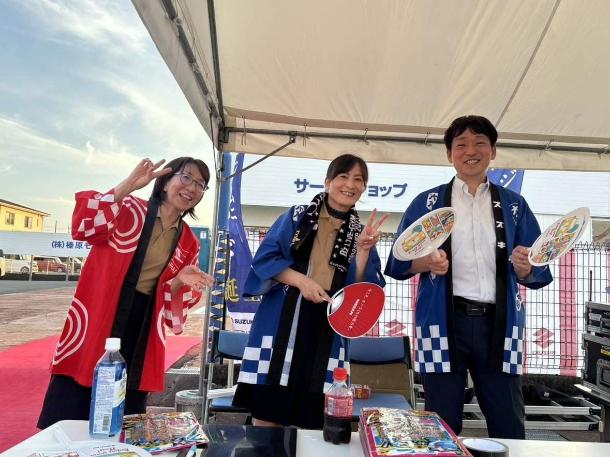
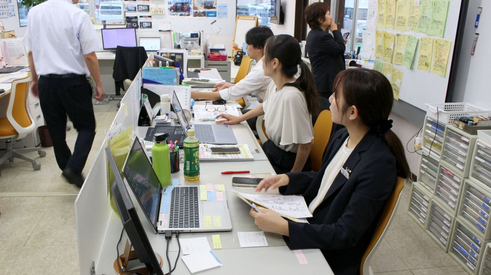
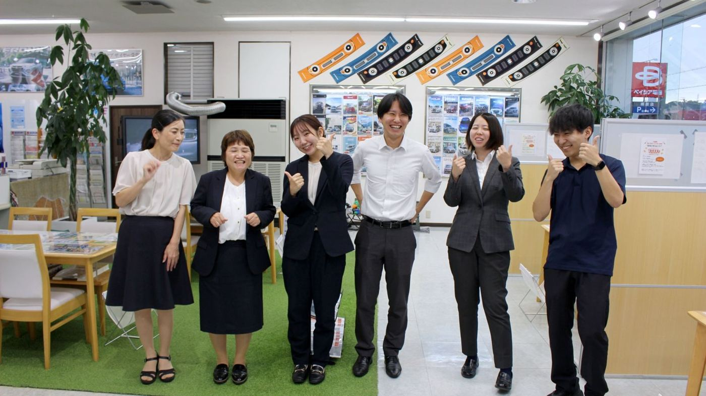
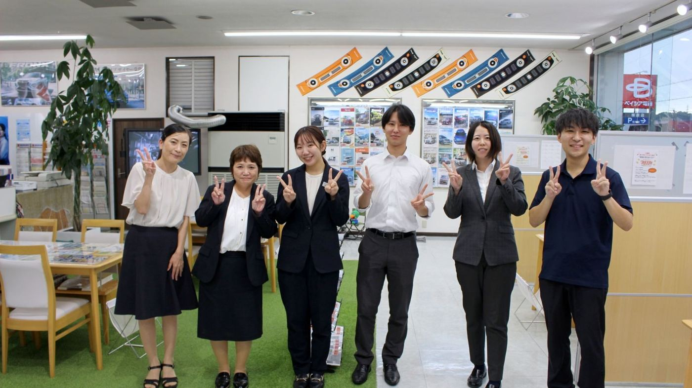
車の仕事が初めてでも大丈夫です。まずは会社見学から、お気軽にお話ししましょう。